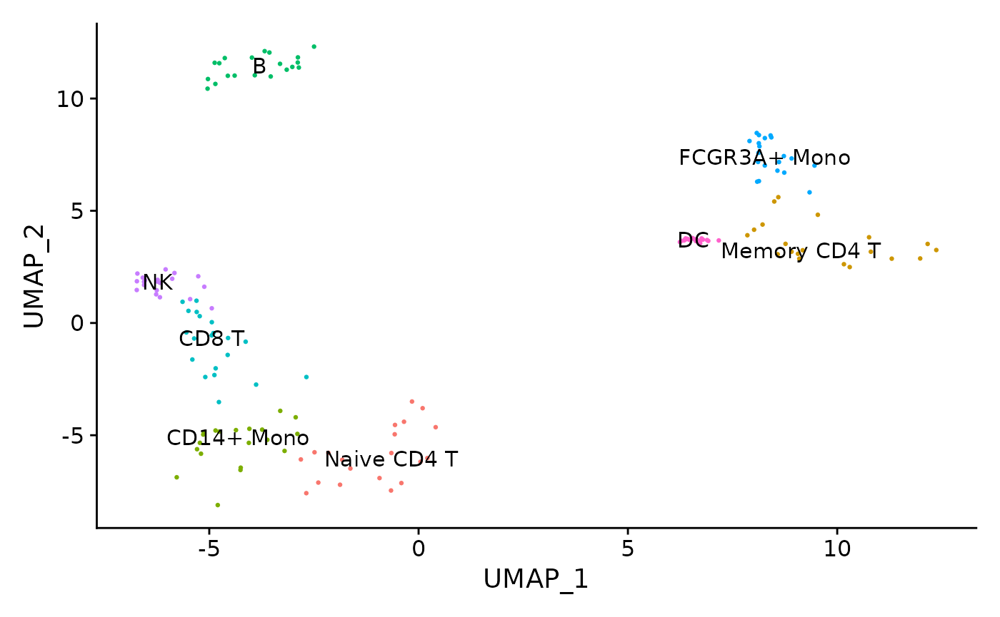
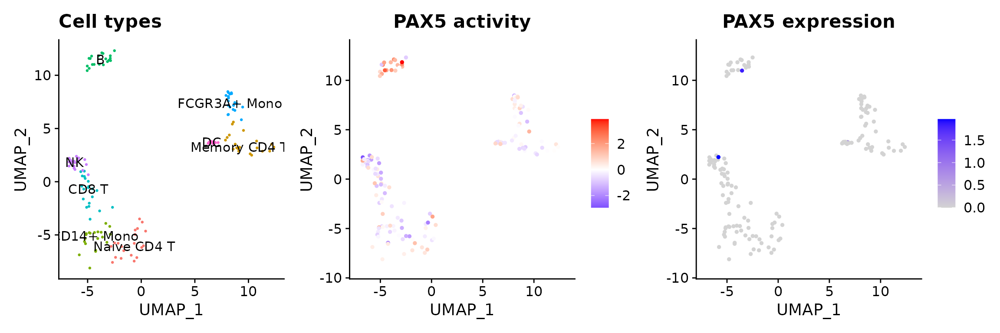
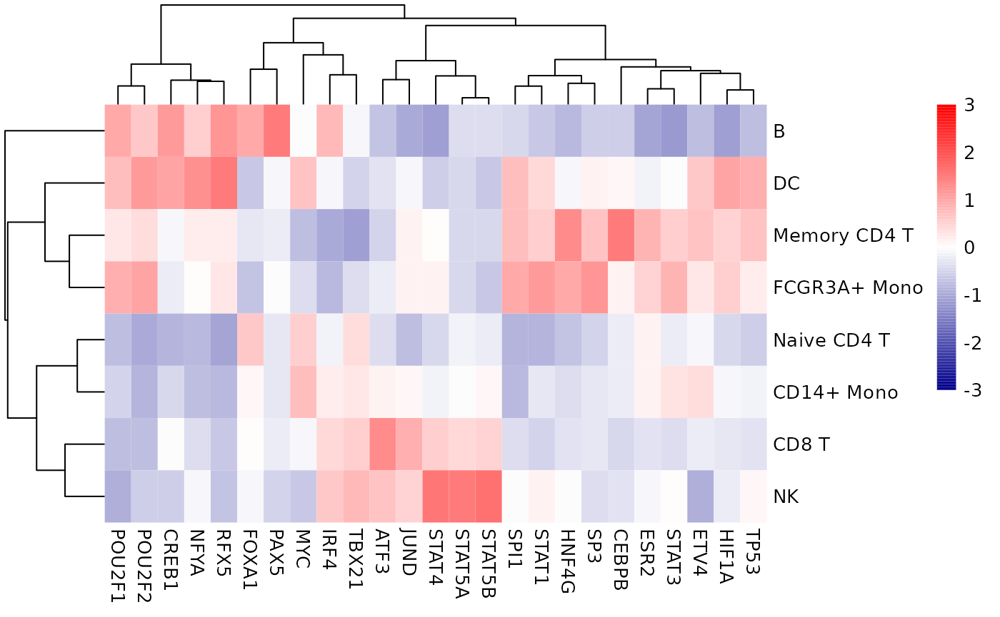

Transcription factor activity inference from scRNA-seq
Pau Badia-i-Mompel
Heidelberg UniversiySource:
vignettes/tf_sc.Rmd
tf_sc.RmdscRNA-seq yield many molecular readouts that are hard to interpret by themselves. One way of summarizing this information is by inferring transcription factor (TF) activities from prior knowledge.
In this notebook we showcase how to use decoupleR for
transcription factor activity inference with a down-sampled PBMCs 10X
data-set. The data consists of 160 PBMCs from a Healthy Donor. The
original data is freely available from 10x Genomics here
from this webpage.
Loading packages
First, we need to load the relevant packages, Seurat to
handle scRNA-seq data and decoupleR to use statistical
methods.
Loading the data-set
Here we used a down-sampled version of the data used in the
Seurat vignette.
We can open the data like this:
inputs_dir <- system.file("extdata", package = "decoupleR")
data <- readRDS(file.path(inputs_dir, "sc_data.rds"))We can observe that we have different cell types:

CollecTRI network
CollecTRI is a comprehensive resource containing a curated collection of TFs and their transcriptional targets compiled from 12 different resources. This collection provides an increased coverage of transcription factors and a superior performance in identifying perturbed TFs compared to our previous DoRothEA network and other literature based GRNs. Similar to DoRothEA, interactions are weighted by their mode of regulation (activation or inhibition).
For this example we will use the human version (mouse and rat are
also available). We can use decoupleR to retrieve it from
OmniPath. The argument split_complexes keeps
complexes or splits them into subunits, by default we recommend to keep
complexes together.
net <- decoupleR::get_collectri(organism = 'human',
split_complexes = FALSE)
net
#> # A tibble: 43,178 × 3
#> source target mor
#> <chr> <chr> <dbl>
#> 1 MYC TERT 1
#> 2 SPI1 BGLAP 1
#> 3 SMAD3 JUN 1
#> 4 SMAD4 JUN 1
#> 5 STAT5A IL2 1
#> 6 STAT5B IL2 1
#> 7 RELA FAS 1
#> 8 WT1 NR0B1 1
#> 9 NR0B2 CASP1 1
#> 10 SP1 ALDOA 1
#> # ℹ 43,168 more rowsActivity inference with Univariate Linear Model (ULM)
To infer TF enrichment scores we will run the Univariate Linear Model
(ulm) method. For each sample in our dataset
(mat) and each TF in our network (net), it
fits a linear model that predicts the observed gene expression based
solely on the TF’s TF-Gene interaction weights. Once fitted, the
obtained t-value of the slope is the score. If it is positive, we
interpret that the TF is active and if it is negative we interpret that
it is inactive.

To run decoupleR methods, we need an input matrix
(mat), an input prior knowledge network/resource
(net), and the name of the columns of net that we want to
use.
# Extract the normalized log-transformed counts
mat <- as.matrix(data@assays$RNA@data)
# Run ulm
acts <- decoupleR::run_ulm(mat = mat,
net = net,
.source = 'source',
.target = 'target',
.mor='mor',
minsize = 5)
acts
#> # A tibble: 80,640 × 5
#> statistic source condition score p_value
#> <chr> <chr> <chr> <dbl> <dbl>
#> 1 ulm ABL1 AAACATACAACCAC-1 2.64 0.00820
#> 2 ulm ABL1 AAACGCTGTTTCTG-1 0.893 0.372
#> 3 ulm ABL1 AACCTTTGGACGGA-1 2.79 0.00525
#> 4 ulm ABL1 AACGCCCTCGTACA-1 1.80 0.0721
#> 5 ulm ABL1 AACGTCGAGTATCG-1 1.63 0.104
#> 6 ulm ABL1 AACTCACTCAAGCT-1 1.71 0.0871
#> 7 ulm ABL1 AAGATGGAAAACAG-1 1.12 0.264
#> 8 ulm ABL1 AAGATTACCGCCTT-1 2.43 0.0151
#> 9 ulm ABL1 AAGCCATGAACTGC-1 1.62 0.105
#> 10 ulm ABL1 AAGGTCTGCAGATC-1 -0.292 0.771
#> # ℹ 80,630 more rowsVisualization
From the obtained results, we store them in our object as a new assay
called tfsulm:
# Extract ulm and store it in tfsulm in pbmc
data[['tfsulm']] <- acts %>%
tidyr::pivot_wider(id_cols = 'source',
names_from = 'condition',
values_from = 'score') %>%
tibble::column_to_rownames('source') %>%
Seurat::CreateAssayObject(.)
# Change assay
DefaultAssay(object = data) <- "tfsulm"
# Scale the data
data <- Seurat::ScaleData(data)
data@assays$tfsulm@data <- data@assays$tfsulm@scale.dataThis new assay can be used to plot activities. Here we observe the activity inferred for PAX5 across cells, which it is particulary active in B cells. Interestingly, PAX5 is a known TF crucial for B cell identity and function. The inference of activities from “foot-prints” of target genes is more informative than just looking at the molecular readouts of a given TF, as an example here is the gene expression of PAX5, which is not very informative by itself:
p1 <- Seurat::DimPlot(data,
reduction = "umap",
label = TRUE,
pt.size = 0.5) +
Seurat::NoLegend() +
ggplot2::ggtitle('Cell types')
colors <- rev(RColorBrewer::brewer.pal(n = 11, name = "RdBu")[c(2, 10)])
p2 <- Seurat::FeaturePlot(data, features = c("PAX5")) +
ggplot2::scale_colour_gradient2(low = colors[1], mid = 'white', high = colors[2]) +
ggplot2::ggtitle('PAX5 activity')
DefaultAssay(object = data) <- "RNA"
p3 <- Seurat::FeaturePlot(data,
features = c("PAX5")) +
ggplot2::ggtitle('PAX5 expression')
Seurat::DefaultAssay(data) <- "tfsulm"
p <- p1 | p2 | p3
p
Exploration
We can also see what is the mean activity per group of the top 20 more variable TFs:
n_tfs <- 25
# Extract activities from object as a long dataframe
df <- t(as.matrix(data@assays$tfsulm@data)) %>%
as.data.frame() %>%
dplyr::mutate(cluster = Seurat::Idents(data)) %>%
tidyr::pivot_longer(cols = -cluster,
names_to = "source",
values_to = "score") %>%
dplyr::group_by(cluster, source) %>%
dplyr::summarise(mean = mean(score))
# Get top tfs with more variable means across clusters
tfs <- df %>%
dplyr::group_by(source) %>%
dplyr::summarise(std = stats::sd(mean)) %>%
dplyr::arrange(-abs(std)) %>%
head(n_tfs) %>%
dplyr::pull(source)
# Subset long data frame to top tfs and transform to wide matrix
top_acts_mat <- df %>%
dplyr::filter(source %in% tfs) %>%
tidyr::pivot_wider(id_cols = 'cluster',
names_from = 'source',
values_from = 'mean') %>%
tibble::column_to_rownames('cluster') %>%
as.matrix()
# Choose color palette
colors <- rev(RColorBrewer::brewer.pal(n = 11, name = "RdBu"))
colors.use <- grDevices::colorRampPalette(colors = colors)(100)
my_breaks <- c(seq(-2, 0, length.out = ceiling(100 / 2) + 1),
seq(0.05, 2, length.out = floor(100 / 2)))
# Plot
pheatmap::pheatmap(mat = top_acts_mat,
color = colors.use,
border_color = "white",
breaks = my_breaks,
cellwidth = 15,
cellheight = 15,
treeheight_row = 20,
treeheight_col = 20) 
Here we can observe other known marker TFs appearing, EBF1 for B cells RFX5 for the myeloid lineage and EOMES for the lymphoid.
Session information
#> ─ Session info ───────────────────────────────────────────────────────────────────────────────────────────────────────
#> setting value
#> version R version 4.4.1 (2024-06-14)
#> os Ubuntu 22.04.5 LTS
#> system x86_64, linux-gnu
#> ui X11
#> language en
#> collate en_US.UTF-8
#> ctype en_US.UTF-8
#> tz UTC
#> date 2024-10-19
#> pandoc 3.4 @ /usr/bin/ (via rmarkdown)
#>
#> ─ Packages ───────────────────────────────────────────────────────────────────────────────────────────────────────────
#> package * version date (UTC) lib source
#> abind 1.4-8 2024-09-12 [1] RSPM
#> backports 1.5.0 2024-05-23 [1] RSPM
#> BiocManager 1.30.25 2024-08-28 [1] RSPM
#> BiocParallel 1.38.0 2024-04-30 [1] Bioconduc~
#> BiocStyle * 2.32.1 2024-06-16 [1] Bioconduc~
#> bit 4.5.0 2024-09-20 [1] RSPM
#> bit64 4.5.2 2024-09-22 [1] RSPM
#> bookdown 0.41 2024-10-16 [1] RSPM
#> bslib 0.8.0 2024-07-29 [1] RSPM
#> cachem 1.1.0 2024-05-16 [1] RSPM
#> cellranger 1.1.0 2016-07-27 [1] RSPM
#> checkmate 2.3.2 2024-07-29 [1] RSPM
#> cli 3.6.3 2024-06-21 [1] RSPM
#> cluster 2.1.6 2023-12-01 [2] CRAN (R 4.4.1)
#> codetools 0.2-20 2024-03-31 [2] CRAN (R 4.4.1)
#> colorspace 2.1-1 2024-07-26 [1] RSPM
#> cowplot 1.1.3 2024-01-22 [1] RSPM
#> crayon 1.5.3 2024-06-20 [1] RSPM
#> curl 5.2.3 2024-09-20 [1] RSPM
#> data.table 1.16.2 2024-10-10 [1] RSPM
#> decoupleR * 2.9.7 2024-10-19 [1] Bioconductor
#> deldir 2.0-4 2024-02-28 [1] RSPM
#> desc 1.4.3 2023-12-10 [1] RSPM
#> digest 0.6.37 2024-08-19 [1] RSPM
#> dotCall64 1.2 2024-10-04 [1] RSPM
#> dplyr * 1.1.4 2023-11-17 [1] RSPM
#> evaluate 1.0.1 2024-10-10 [1] RSPM
#> fansi 1.0.6 2023-12-08 [1] RSPM
#> farver 2.1.2 2024-05-13 [1] RSPM
#> fastDummies 1.7.4 2024-08-16 [1] RSPM
#> fastmap 1.2.0 2024-05-15 [1] RSPM
#> fitdistrplus 1.2-1 2024-07-12 [1] RSPM
#> fs 1.6.4 2024-04-25 [1] RSPM
#> future 1.34.0 2024-07-29 [1] RSPM
#> future.apply 1.11.2 2024-03-28 [1] RSPM
#> generics 0.1.3 2022-07-05 [1] RSPM
#> ggplot2 * 3.5.1 2024-04-23 [1] RSPM
#> ggrepel 0.9.6 2024-09-07 [1] RSPM
#> ggridges 0.5.6 2024-01-23 [1] RSPM
#> globals 0.16.3 2024-03-08 [1] RSPM
#> glue 1.8.0 2024-09-30 [1] RSPM
#> goftest 1.2-3 2021-10-07 [1] RSPM
#> gridExtra 2.3 2017-09-09 [1] RSPM
#> gtable 0.3.5 2024-04-22 [1] RSPM
#> highr 0.11 2024-05-26 [1] RSPM
#> hms 1.1.3 2023-03-21 [1] RSPM
#> htmltools 0.5.8.1 2024-04-04 [1] RSPM
#> htmlwidgets 1.6.4 2023-12-06 [1] RSPM
#> httpuv 1.6.15 2024-03-26 [1] RSPM
#> httr 1.4.7 2023-08-15 [1] RSPM
#> ica 1.0-3 2022-07-08 [1] RSPM
#> igraph 2.0.3 2024-03-13 [1] RSPM
#> irlba 2.3.5.1 2022-10-03 [1] RSPM
#> jquerylib 0.1.4 2021-04-26 [1] RSPM
#> jsonlite 1.8.9 2024-09-20 [1] RSPM
#> KernSmooth 2.23-24 2024-05-17 [2] CRAN (R 4.4.1)
#> knitr 1.48 2024-07-07 [1] RSPM
#> labeling 0.4.3 2023-08-29 [1] RSPM
#> later 1.3.2 2023-12-06 [1] RSPM
#> lattice 0.22-6 2024-03-20 [2] CRAN (R 4.4.1)
#> lazyeval 0.2.2 2019-03-15 [1] RSPM
#> leiden 0.4.3.1 2023-11-17 [1] RSPM
#> lifecycle 1.0.4 2023-11-07 [1] RSPM
#> listenv 0.9.1 2024-01-29 [1] RSPM
#> lmtest 0.9-40 2022-03-21 [1] RSPM
#> logger 0.3.0 2024-03-05 [1] RSPM
#> lubridate 1.9.3 2023-09-27 [1] RSPM
#> magrittr 2.0.3 2022-03-30 [1] RSPM
#> MASS 7.3-61 2024-06-13 [1] RSPM (R 4.4.0)
#> Matrix 1.7-1 2024-10-18 [1] RSPM (R 4.4.0)
#> matrixStats 1.4.1 2024-09-08 [1] RSPM
#> mime 0.12 2021-09-28 [1] RSPM
#> miniUI 0.1.1.1 2018-05-18 [1] RSPM
#> munsell 0.5.1 2024-04-01 [1] RSPM
#> nlme 3.1-166 2024-08-14 [1] RSPM (R 4.4.0)
#> OmnipathR 3.12.4 2024-10-02 [1] Bioconduc~
#> parallelly 1.38.0 2024-07-27 [1] RSPM
#> patchwork * 1.3.0 2024-09-16 [1] RSPM
#> pbapply 1.7-2 2023-06-27 [1] RSPM
#> pheatmap * 1.0.12 2019-01-04 [1] RSPM
#> pillar 1.9.0 2023-03-22 [1] RSPM
#> pkgconfig 2.0.3 2019-09-22 [1] RSPM
#> pkgdown 2.1.1 2024-09-17 [1] RSPM
#> plotly 4.10.4 2024-01-13 [1] RSPM
#> plyr 1.8.9 2023-10-02 [1] RSPM
#> png 0.1-8 2022-11-29 [1] RSPM
#> polyclip 1.10-7 2024-07-23 [1] RSPM
#> prettyunits 1.2.0 2023-09-24 [1] RSPM
#> progress 1.2.3 2023-12-06 [1] RSPM
#> progressr 0.14.0 2023-08-10 [1] RSPM
#> promises 1.3.0 2024-04-05 [1] RSPM
#> purrr 1.0.2 2023-08-10 [1] RSPM
#> R6 2.5.1 2021-08-19 [1] RSPM
#> ragg 1.3.3 2024-09-11 [1] RSPM
#> RANN 2.6.2 2024-08-25 [1] RSPM
#> rappdirs 0.3.3 2021-01-31 [1] RSPM
#> RColorBrewer 1.1-3 2022-04-03 [1] RSPM
#> Rcpp 1.0.13 2024-07-17 [1] RSPM
#> RcppAnnoy 0.0.22 2024-01-23 [1] RSPM
#> RcppHNSW 0.6.0 2024-02-04 [1] RSPM
#> readr 2.1.5 2024-01-10 [1] RSPM
#> readxl 1.4.3 2023-07-06 [1] RSPM
#> reshape2 1.4.4 2020-04-09 [1] RSPM
#> reticulate 1.39.0 2024-09-05 [1] RSPM
#> rlang 1.1.4 2024-06-04 [1] RSPM
#> rmarkdown 2.28 2024-08-17 [1] RSPM
#> ROCR 1.0-11 2020-05-02 [1] RSPM
#> RSpectra 0.16-2 2024-07-18 [1] RSPM
#> Rtsne 0.17 2023-12-07 [1] RSPM
#> rvest 1.0.4 2024-02-12 [1] RSPM
#> sass 0.4.9 2024-03-15 [1] RSPM
#> scales 1.3.0 2023-11-28 [1] RSPM
#> scattermore 1.2 2023-06-12 [1] RSPM
#> sctransform 0.4.1 2023-10-19 [1] RSPM
#> selectr 0.4-2 2019-11-20 [1] RSPM
#> sessioninfo 1.2.2 2021-12-06 [1] RSPM
#> Seurat * 5.1.0 2024-05-10 [1] RSPM
#> SeuratObject * 5.0.2 2024-05-08 [1] RSPM
#> shiny 1.9.1 2024-08-01 [1] RSPM
#> sp * 2.1-4 2024-04-30 [1] RSPM
#> spam 2.11-0 2024-10-03 [1] RSPM
#> spatstat.data 3.1-2 2024-06-21 [1] RSPM
#> spatstat.explore 3.3-2 2024-08-21 [1] RSPM
#> spatstat.geom 3.3-3 2024-09-18 [1] RSPM
#> spatstat.random 3.3-2 2024-09-18 [1] RSPM
#> spatstat.sparse 3.1-0 2024-06-21 [1] RSPM
#> spatstat.univar 3.0-1 2024-09-05 [1] RSPM
#> spatstat.utils 3.1-0 2024-08-17 [1] RSPM
#> stringi 1.8.4 2024-05-06 [1] RSPM
#> stringr 1.5.1 2023-11-14 [1] RSPM
#> survival 3.7-0 2024-06-05 [1] RSPM (R 4.4.0)
#> systemfonts 1.1.0 2024-05-15 [1] RSPM
#> tensor 1.5 2012-05-05 [1] RSPM
#> textshaping 0.4.0 2024-05-24 [1] RSPM
#> tibble * 3.2.1 2023-03-20 [1] RSPM
#> tidyr * 1.3.1 2024-01-24 [1] RSPM
#> tidyselect 1.2.1 2024-03-11 [1] RSPM
#> timechange 0.3.0 2024-01-18 [1] RSPM
#> tzdb 0.4.0 2023-05-12 [1] RSPM
#> utf8 1.2.4 2023-10-22 [1] RSPM
#> uwot 0.2.2 2024-04-21 [1] RSPM
#> vctrs 0.6.5 2023-12-01 [1] RSPM
#> viridisLite 0.4.2 2023-05-02 [1] RSPM
#> vroom 1.6.5 2023-12-05 [1] RSPM
#> withr 3.0.1 2024-07-31 [1] RSPM
#> xfun 0.48 2024-10-03 [1] RSPM
#> xml2 1.3.6 2023-12-04 [1] RSPM
#> xtable 1.8-4 2019-04-21 [1] RSPM
#> yaml 2.3.10 2024-07-26 [1] RSPM
#> zoo 1.8-12 2023-04-13 [1] RSPM
#>
#> [1] /usr/local/lib/R/site-library
#> [2] /usr/local/lib/R/library
#>
#> ──────────────────────────────────────────────────────────────────────────────────────────────────────────────────────